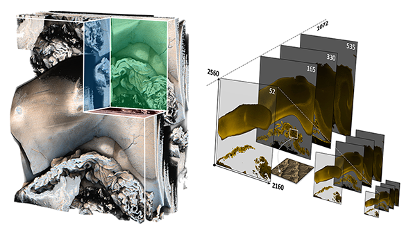
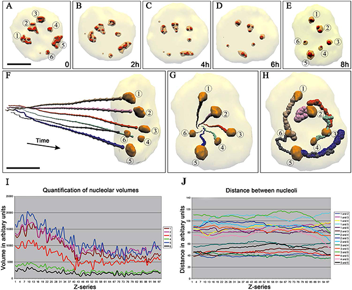
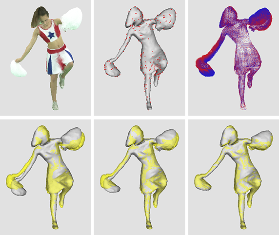

Professor
RVM Computing Group
CReSTIC
University of Reims
IUT de Reims
Chemin des Rouliers
CS 30012
51687 Reims Cedex 2
France
laurent.lucas (AT) univ-reims.fr
Laurent Lucas
I am currently Professor in computer science at the University of Reims Champagne-Ardenne (URCA). He was previously a lecturer at the same university after defending my PhD thesis in 1995. My research interests are mainly focused on high-performance graphics, scientific visualization, computer graphics and 3D vision.
As a Deputy President of URCA, I was in charge of the Executive Board of his university in 2006. For the past 3 years and until the end of 2019, I am Deputy President for Research and Valorization. From 2008 to 2015, I was at the head of the largest CReSTIC team with more than 35 people. I also installed and managed the URCA's immersive visualization platform until 2016. Beside the ROMEO HPC Center ranked in June 2018 as the 249th world supercomputer in the TOP500 and 20th in the GREEN500, these two prestigious instruments installed within the MaSCA – URCA’s technological platform – make URCA a unique place for education and research high-performance graphics topics.
Publications
| 2019 | |
|  |
Interactive Visualization and On-Demand Processing of Large Volume Data: A Fully GPU-Based Out-Of-Core Approach
IEEE VIS 2019, Vancouver, Canada, October 2019, Invited paper.
|
 |
Hierarchical approach for neonate cerebellum segmentation from MRI: An experimental study
International Symposium on Mathematical Morphology (ISMM), LNCS 11564, Saarbrücken, Germany, p 483-495, July 2019. DOI:10.1007/978-3-030-20867-7_37
|
|
Distributed out-of-core approach for in-situ volume rendering of massive dataset
International Conference on High Performance Computing (ISC Workshops), LNCS 11887, Frankfurt, Germany, p 623-633, June 2019. 10.1007/978-3-030-34356-9_47
|
 |
Interactive Visualization and On-Demand Processing of Large Volume Data: A Fully GPU-Based Out-Of-Core Approach
IEEE Transactions on Visualization and Computer Graphics (TVCG), 2019. DOI:10.1109/TVCG.2019.2912752
|
|
Simulating Depth Perception in Virtual Microscopy
16th International Symposium on Biomedical Imaging (ISBI), IEEE, Venice, Italy, p 497-501, April 2019. DOI:10.1109/ISBI.2019.8759160
|
| 2018 | |
|
Multi-user predictive rendering on remote multi-GPU clusters J. Randrianandrasana, A. Chanonier, H. Deleau, T. Muller, P. Porral, P. Krajecki et L. Lucas 4th VR International Workshop on Collaborative Virtual Environments (3DCVE), IEEE, Reutlingen, Germany, p 1-4, mars 2018. DOI:10.1109/3DCVE.2018.8637114 |
|
[ACTI-33] Iso photographic rendering P. Porral, L. Lucas, T. Muller et J. Randrianandrasana Workshop on Material Appearance Modeling (MAM), Eurographics, Karlsruhe, Germany, p 11-14, juillet 2018. DOI:10.2312/mam.20181192 |
|
A Fully GPU-Based Out-Of-Core Approach to Handle Large Volume Data
GPU Technology Conference Europe (GTC), Munich, Germany, March 2018.
|
| 2017 | |
|  |
Nucleolar sub-compartments in motion during rRNA synthesis inhibition: Contraction of nucleolar condensed chromatin and gathering of fibrillar centers are concomitant
PLoS ONE, 12(11), 2017. DOI:10.1371/journal.pone.0187977
|
|
Virtual review of large scale image stack on 3D display
J. Sarton, N. Courilleau, Y. Remion et L. Lucas
International Conference on Image Processing (ICIP), IEEE, Beijing, China, p 2229-2233, septembre 2017. DOI:10.1109/ICIP.2017.8296678
pdf
|
|
USE Together, a WebRTC-based Solution for Multi-User Presence Desktop
L. Lucas, H. Deleau, B. Battin et J. Lehuraux
14th International Conference on Cooperative Design, Visualization and Engineering (CDVE), LNCS 10451, Mallorca, Spain, p 228-235, septembre 2017. DOI:10.1007/978-3-319-66805-5_29
pdf
|
| 2016 | |
|
Towards an interactive navigation in large virtual microscopy images on 3D displays
J. Sarton, N. Courilleau, Y. Remion et L. Lucas
International Conference on 3D Imaging (IC3D), IEEE, Liège, Belgium, p 1-5, décembre 2016. DOI:10.1109/IC3D.2016.7823463
pdf
|
| 2015 | |
|  |
Robust motion flow for mesh tracking of freely moving actors
The Visual Computer, Springer, p 1-12, 2015. DOI:10.1007/s00371-015-1191-y
pdf
|
| 2012 | |
|
A Virtual Discrete Rainfall Simulator
Environmental Modelling & Software, Elsevier, 29(1):51-60, 2012. DOI:10.1016/j.envsoft.2011.10.003
pdf
|
|
| 2010 | |
|
Shape-Adaptive DCT for Color Object-Based Coding
Journal of Automation & Systems Engineering, 4(3):182-195, 2010.
pdf
|
|
|
Multi-view shooting geometry for multiscopic rendering with controlled distortion
Hindawi, International Journal of Digital Multimedia Broadcasting (IJDMB), special issue Advances in 3DTV: Theory and Practice, 2010(975674):1-11, 2010. DOI:10.1155/2010/975674
pdf
|
|
| 2009 | |
|
Imaging techniques to evaluate the response to treatment in oncology: Current standards and perspectives
Elsevier, Critical Reviews in Oncology/Hematology, 72(3):217-238, 2009.
pdf
|
|
| 2008 | |
|
A Dynamic Model of Cracks Development Based on a 3D Discrete Shrinkage Volume Propagation
Blackwell Publishers, Computer Graphics Forum, 27(1):47-62, 2008. DOI:10.1111/j.1467-8659.2007.01042.x
pdf
|
|
| 2006 | |
|
SoDA Project: a Simulation of Soil Surface Degradation by Rainfall
Elsevier, Computers & Graphics, 30(4):494-506, 2006.
pdf
|
|
| 2005 | |
|
A New Pixel-Oriented Visualization Technique Through Color Image
Palgrave Macmillan, Information Visualization, 4(4):257-265, 2005. DOI:10.1057/palgrave.ivs.9500104
pdf
|